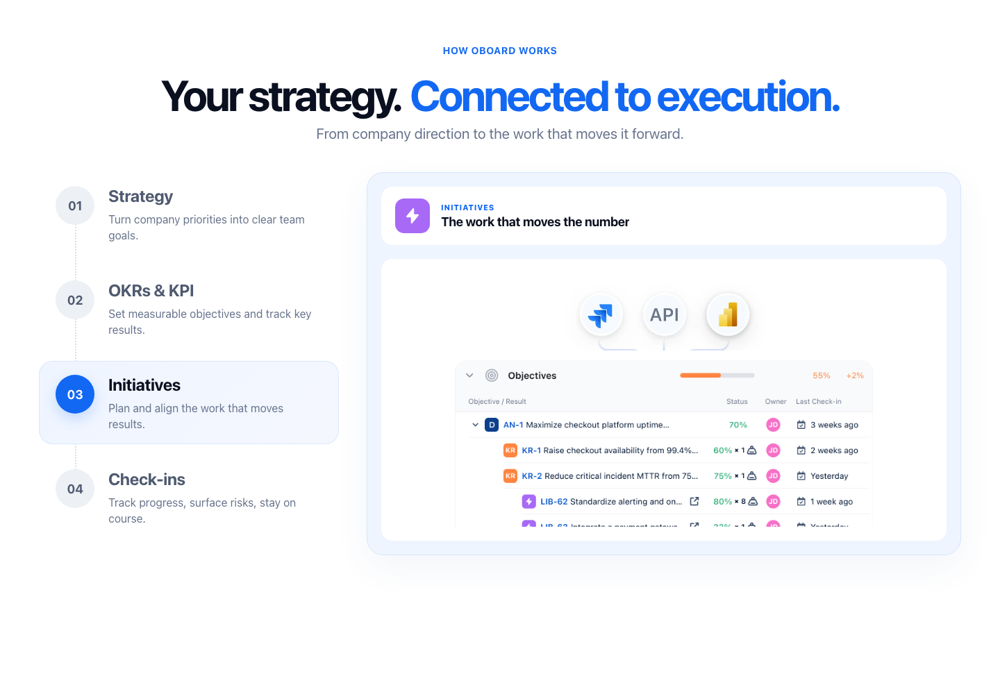
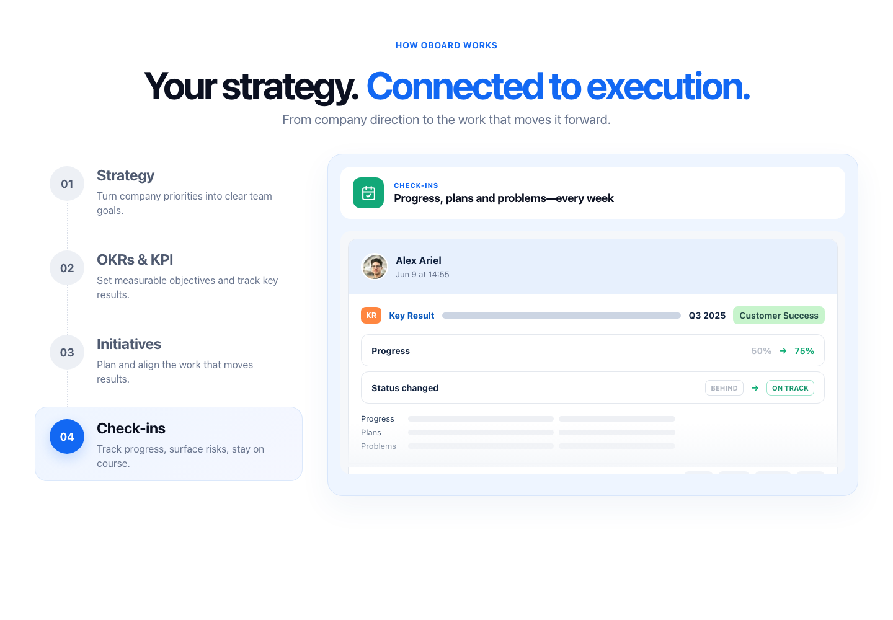

<!doctype html>
<meta charset="utf-8">
<title>Initiatives QA comparison</title>
<style>
  *{box-sizing:border-box}body{margin:0;padding:24px;background:#e9eef7;font-family:Inter,Arial,sans-serif;color:#0b1020}
  main{display:grid;grid-template-columns:1fr 1fr;gap:24px;align-items:start}
  figure{margin:0;padding:16px;background:white;border-radius:16px;box-shadow:0 8px 24px #263f6b12}
  figcaption{font-size:16px;font-weight:700;margin-bottom:12px}
  img{display:block;width:100%;height:auto;border-radius:10px}
</style>
<main>
  <figure><figcaption>Source visual — exact Figma-derived asset</figcaption></figure>
  <figure><figcaption>Rendered implementation — 1440 × 1000</figcaption></figure>
  <figure><figcaption>Check-ins source structure</figcaption></figure>
  <figure><figcaption>Native Check-ins implementation — 1440 × 1000</figcaption></figure>
</main>
